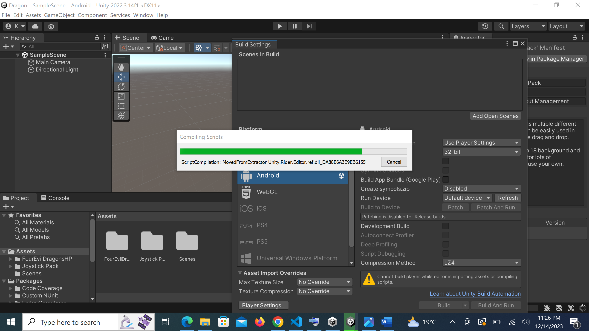
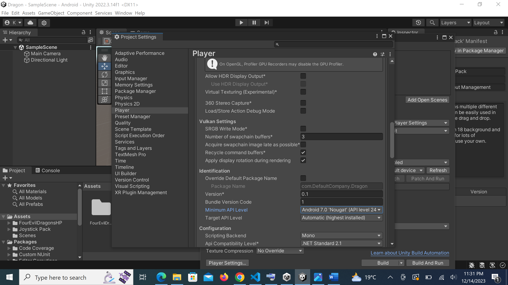
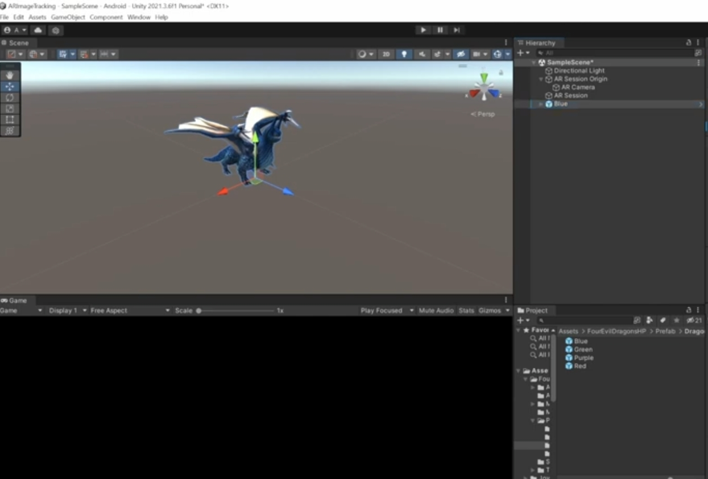
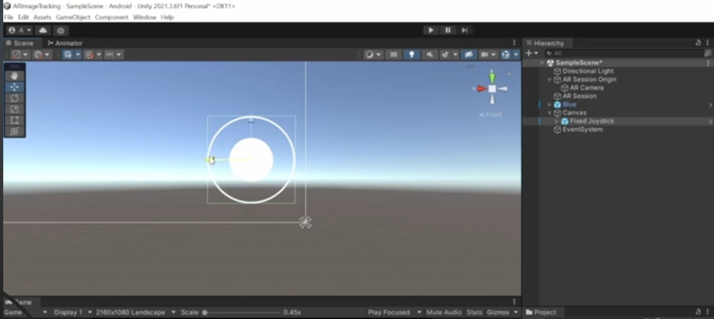

Design Workflow for AR Dragon App
1.AR Foundation Setup: - Begin by installing AR Foundation and AR Core through the Unity Package Manager on the Windows platform, laying the foundation for augmented reality capabilities.

2.Platform Configuration: - Switch the platform to Android for optimal compatibility. Navigate to Player Settings, select Vulkan API, and switch the scripting backend to IL2CPP, laying the groundwork for a robust AR experience.
3.Graphics Optimization for Immersive Realism: - Pay attention to visual finesse by carefully adjusting graphics settings. Unchecking auto graphics empowers precise control over the visual elements, while selecting Vulkan API enhances graphics rendering, contributing to an immersive and realistic dragon encounter.
4.Scene Setup: - Right-click to access scene options. Choose XR and select AR Session Origin. This step seamlessly integrates the AR camera, providing the groundwork for immersive interactions.
AR Session Integration
1.Refrence Image: - The AR Tracked Image Manager takes center stage, dynamically spawning prefabs once images are recognized.
.jpg)
2.AR Tracked Image Manager Integration: - Integrate the AR Tracked Image Manager seamlessly into the AR Session, creating a symbiotic relationship that enhances the app's interactivity.
3.Dynamic Prefab Spawning: - Witness the magic unfold as the AR Tracked Image Manager diligently identifies and tracks specified images. Upon image recognition, dynamic prefabs materialize, bringing the dragon to life in response to the user's environment.
Joystick Integration
• This meticulous integration of a joystick control system not only adds a layer of interactivity to the AR Dragon App but also exemplifies a commitment to user-centric design
• Canvas Setup for User Interface: - Initiate the design process by right-clicking to access the UI options and selecting a Canvas. Optimal user interface foundation sets the stage for intuitive controls.
• Responsive Screen Scaling: - Enhance the user experience by configuring the Canvas Scaler from a constant pixel size to scale with screen size. This ensures a responsive layout across various devices, optimizing the joystick's visual appeal.
• Joystick Prefab Integration: - Navigate to the joystick section and effortlessly integrate the joystick prefab by dragging and dropping the fixed joystick into the Canvas. This step seamlessly introduces the joystick interface for user-friendly dragon control.
• Physics Adjustment for Realism: - Augment realism by adding a Rigidbody component to the joystick. Uncheck the "Use Gravity" option to ensure a weightless and responsive joystick experience, enhancing overall control precision
• Dragon Controller Configuration: - Tailor the dragon's responsiveness by configuring the dragon controller. Set the speed to 0.5, striking the perfect balance between fluid movement and user control, culminating in an immersive augmented reality encounter.
Building Unity App for Android
The following link contains a path to google drive where you can download the application and review:Import APP
The following link contains instruction on how to build the program to android on completion; link to docs
Before you create a build, configure your project’s settings so that Unity builds the application with the runtime settings and build system properties you want.
Challenges Faced and Solutions Achieved
1. The need for the latest version of Google Play Services presented a compatibility challenge, as some devices were not equipped with the required version, potentially limiting the app's reach.
2. Tailoring the app for the Android platform required nuanced adjustments in graphics settings, API selection, and scripting backends to ensure optimal performance.
3. Implementing AR Tracked Image Manager to dynamically spawn dragon prefabs based on image recognition posed challenges in ensuring precise tracking and responsiveness.
4. Incorporating a joystick for dragon control demanded a delicate balance between responsiveness and realism, especially in relation to physics and speed settings.